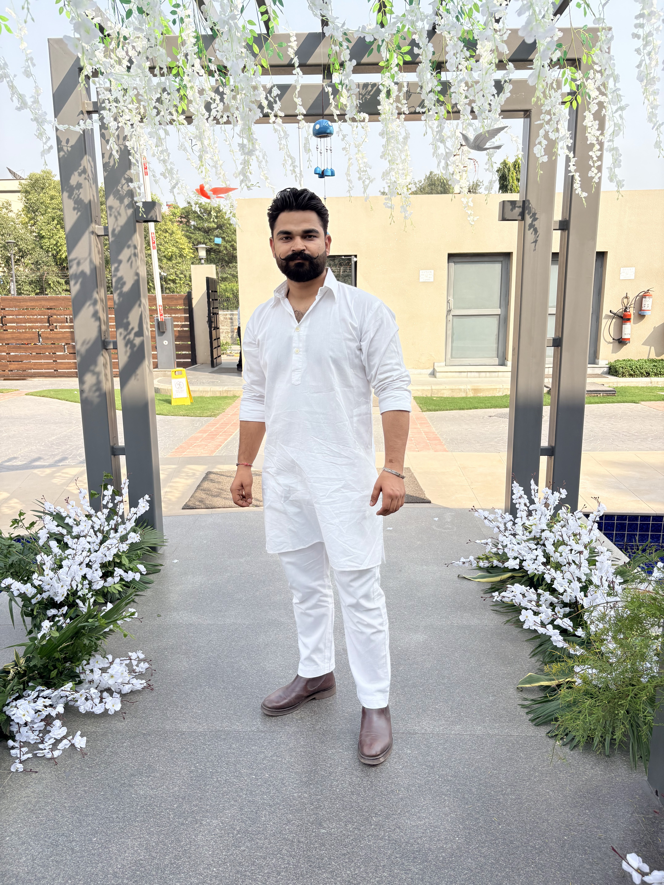
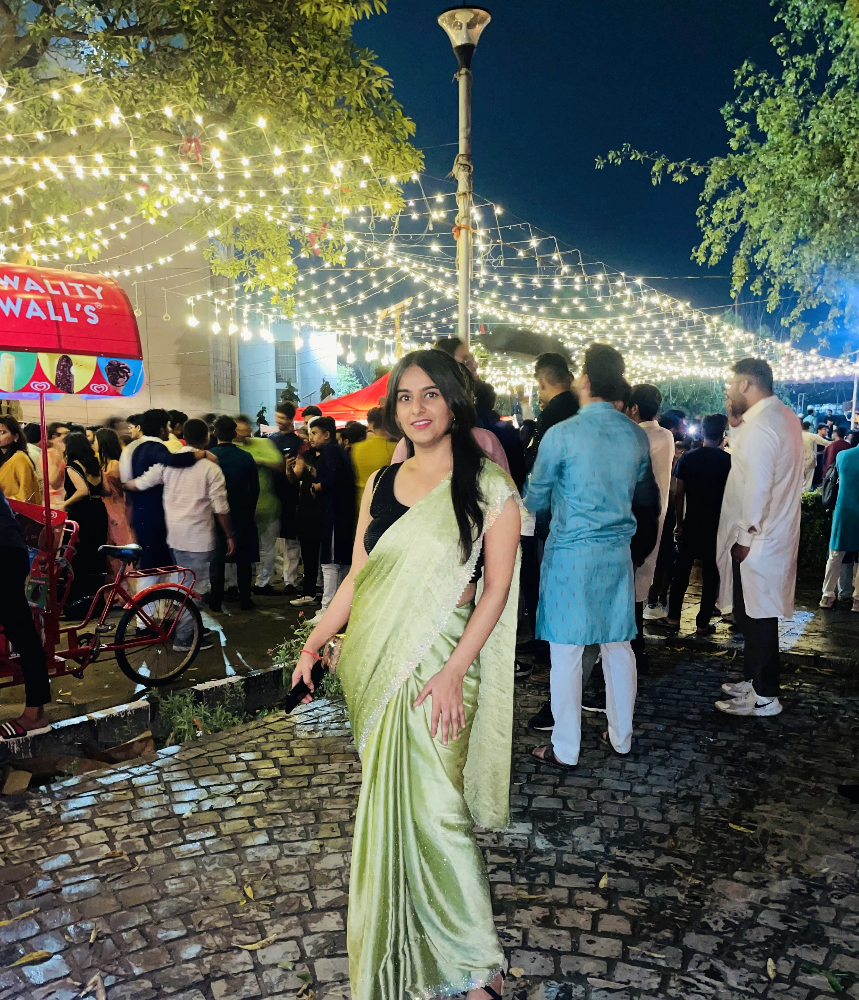
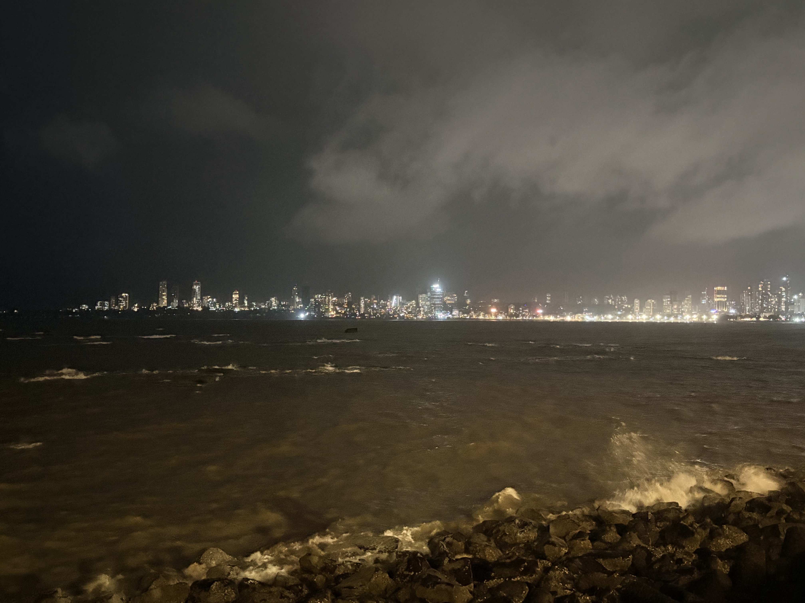
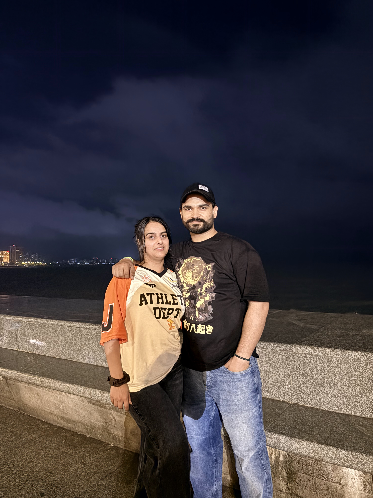
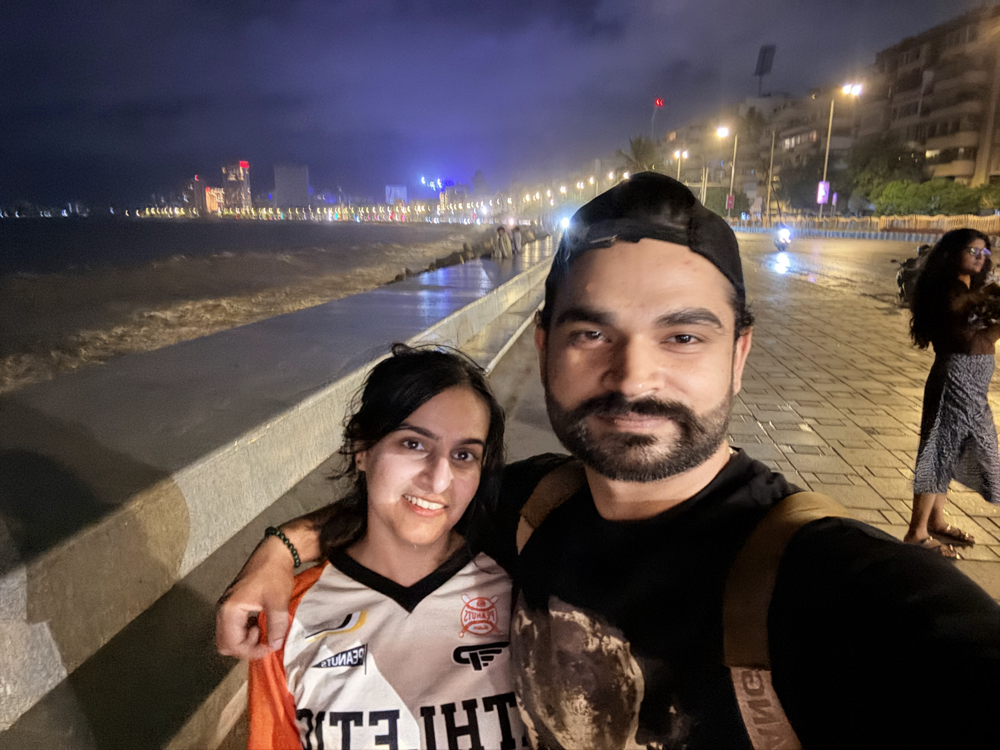
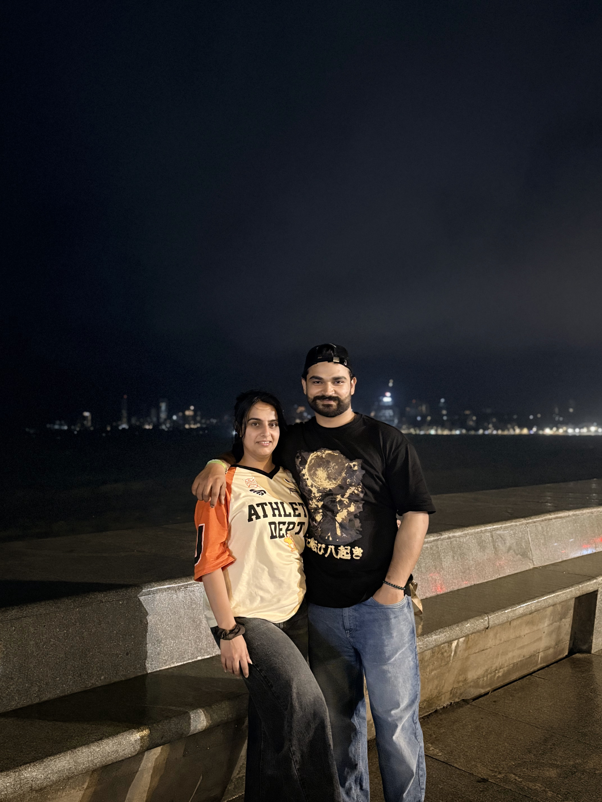
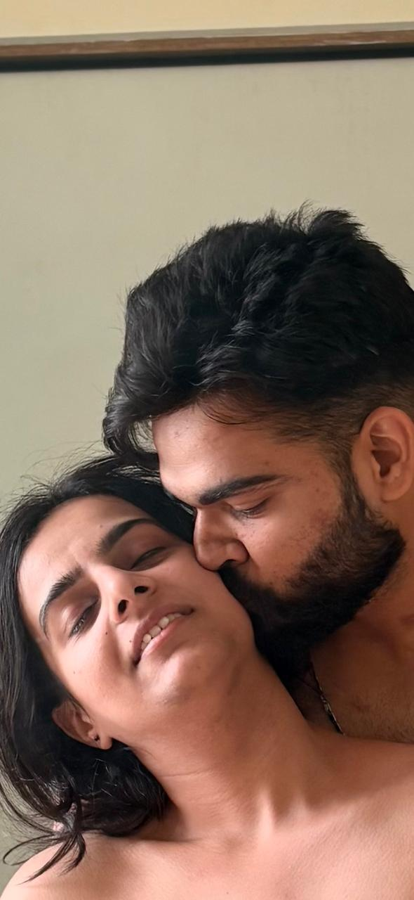
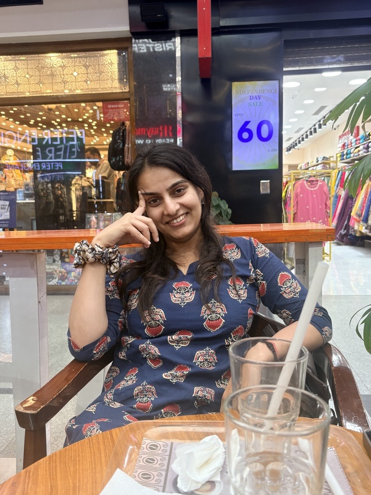

We just kept talking
Consistently. Checking up on each other, sharing the little things, making each other feel important. Slowly, we became best friends.
hi, Sunshine
I built you a little place to live inside our story. But first, a tiny game, a few questions only you would know. No wrong answers, promise. Ready?
you got every one
Because this story is ours, and no one knows it like you. Come in. Let me tell it back to you.
I water You, You water me.
Vivek · Shagun
Chapter One · February 2019
It started with a random text. No plan, no reason, just a message sent out into the quiet to a stranger. We were both a little bruised back then, fresh off our own goodbyes, and somehow we found each other in that in-between.
We talked about the smallest things. The movies and series we were watching. Shayaris passed back and forth like little gifts. Nothing that was supposed to matter, and yet it was the beginning of everything.
The first thing I understood about you was your mind. How mature you were. How easily you understood me when no one else seemed to. I was fascinated by your intellect then, and I still am.


Chapter Two · 2019 — 2026
Seven years. No shortcuts, no fast-forward. Just two people choosing to stay in each other's lives, one ordinary day at a time. (swipe the cards →)
Consistently. Checking up on each other, sharing the little things, making each other feel important. Slowly, we became best friends.
We talked about it so many times, but always in a fun way. Both of us too scared to say it for real, because losing each other was the one thing neither of us could risk.
There were times we drifted apart. But we always found our way back, because with each other, we felt peace. That was the thing we couldn't explain and couldn't walk away from.
"You water me, and I water you." Four words that somehow hold seven whole years inside them.
the story continues ↓Chapter Three
We planned to meet, more than once. One time I backed out. After that we stopped planning, but I kept asking, and you kept saying very soon.
Years of very soon. Two cities, two lives, one thread that refused to break.
Delhi. Then Bengaluru. And still, somehow, always each other.
Chapter Four · Mumbai, May 2026
No occasion. Just a random, impromptu plan that we finally, finally didn't back out of. I flew in from Bengaluru. You came from Delhi for a training. Seven years, and we were about to be in the same city for the first time.

I waited outside the airport arrival gate. Then there you were. The first thing I saw was your face and a soft, normal smile. I was nervous. Maybe you were too. But the moment we hugged, sideways, almost shy, every bit of that nervousness just left.


That Wednesday night we had drinks in the room. You got pretty drunk, and we decided to go for a walk. It was drizzling, a little breeze in the air. We reached a point on the road, and the sky opened, heavy rain, out of nowhere. We ran for the nearest shelter, a shed outside a bank ATM.

And there, under that shed, in the rain, you finally said it. Everything you'd been carrying for years. That you loved me. That you found peace in me. You told me you'd given me a hundred hints over the years, and I'd been too slow, too careful, to catch a single one.
Your health got worse that night, high fever, cold, so we went back to the room.
The next day, after your training, I told you everything you'd said, because you didn't remember a word of it. And then I said my part. That I love you too. That you give me sukoon. I named the fear we'd both carried for seven years, that we were terrified of losing each other, and I asked if you'd take the risk anyway.
I asked more than once. And then, lying against me, you said it. Let's do it.

Chapter Five · Now
Today you are my sukoon. The love of my life. Not a maybe, not a someday, mine.
What I admire most is still your mind, the way you understand me without me having to explain. And the small thing that undoes me every time? The way you care about me. It's quiet and it's real and it's everything.
.jpg)
.jpg)

.jpg)
The Promise
My Sunshine,
Seven years ago I texted a stranger, and today I'm writing to the love of my life. I don't know how I got that lucky, but I'm not going to question it. I'm just going to keep choosing you.
You were scared of losing me, and I was scared of losing you, and in Mumbai we finally decided that fear was a terrible reason to stay apart. So we jumped. You said let's do it, and I have never been more sure of anything.
Here is my promise. I want a lifetime with you. I want to love you through every ordinary day and every impossible one. I want to see every city and every country with you, one by one, until the map runs out and we start again.
You give me sukoon. You are my peace on earth. And wherever this life takes us, you water me and I water you, always.
I love you so much,
Yours, forever —
Vivek